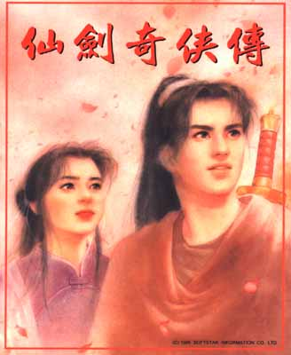
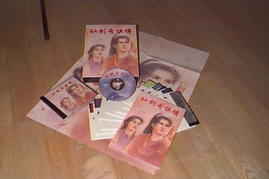
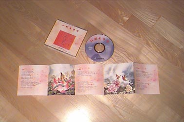

大宇出品 必屬佳作
必屬佳作
媐
國音:ㄒㄧ形容詞:享受 |
舲
國音:ㄌㄧㄥˊ名詞:小船 |
坊
國音:ㄈㄤ 名詞:工作場所 |
|  | 問世間情為何物？
夢無痕， 隨風逝， 仙靈如月長伴君
一心習武，夢想名震江湖之少年李逍遙，因緣際會 下邂逅 仙靈島之仙女趙靈兒。為解開靈兒身世之謎，逍 遙護趙靈 兒遠赴千里尋親。途中，逍遙又因多事得罪另 一歡喜冤家 林月如，之後又被苗族巫女阿奴死纏不放。 面對蕙質蘭心 的靈兒、外剛內柔的月如、天真浪漫的阿 奴，李逍遙將如 何做一抉擇呢？ |
九五年金袋獎得主
◎刻骨銘心之情夢悲劇。劇情曲折感人，對白風趣低迴
◎大氣魄之華麗場景，雷霆萬鈞之戰鬥，敵我招式招招 凜冽、前所未見
◎哀怨悱惻、扣人心弦之近百首配樂，同時支援 FM、 CD、MIDI三音源，營造出有如電影之哀淒世界
◎榮獲1995多媒體金袋獎第一名，「新遊戲時代」「軟體世界」等雜誌排行榜榜首逾半年，支持高居不下
|  | 產品內容:
一.磁片版:1.2M 磁片12片. 光碟版:光碟一片. 二.精美說明書一本. 三.陳淑芬原版封面海報. |
|  | 光碟內容:
ＣＤ除主程式外,還有八首ＣＤ品質的 音樂,十分有水準!! 還有一張印刷精美的詩詞集. 玩泡麵版的去買一套吧!!! |
光碟‧磁片版/386以上/2M RAM/28MB 硬碟空間/首度支援MIDI音源
本坊之圖,文,聲音皆獲大宇資訊之授權.
大宇出品必屬佳作
本資料為「大宇資訊有限公司」所提供,僅供瀏覽之用,禁止未經授權之其他任何行為。
(C) 1997 SOFTSTAR INFORMATION Co.,LTD.
|
|
|
|
|
|